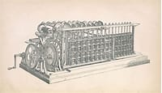
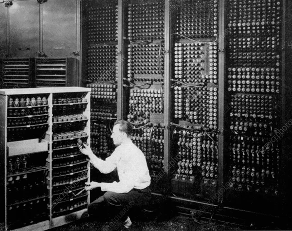
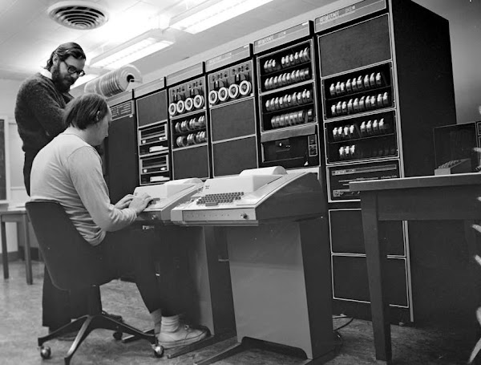
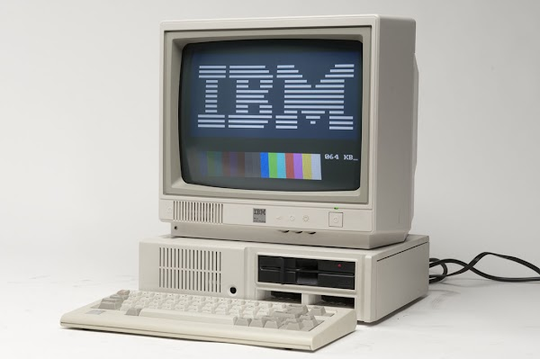
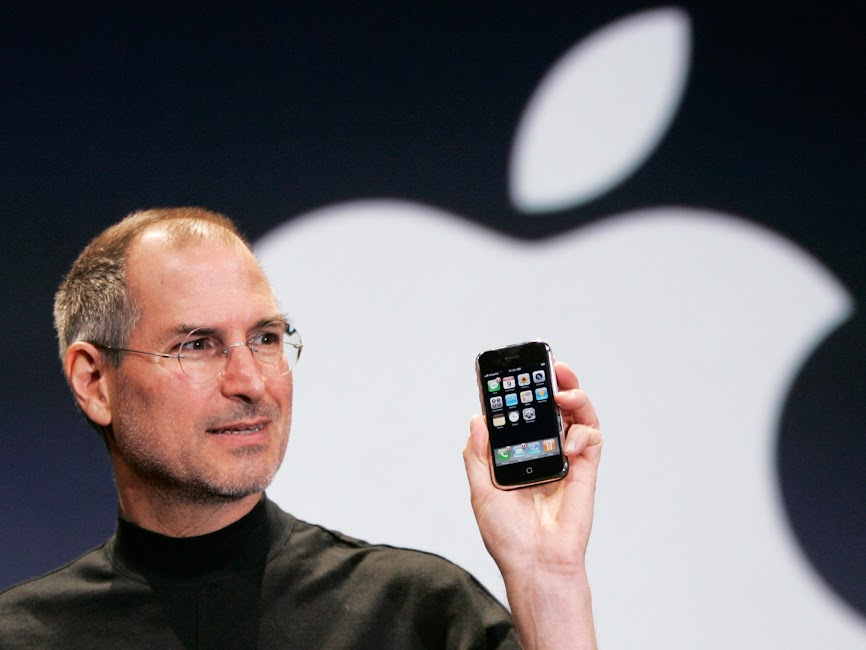
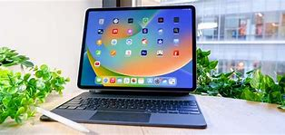

| TIME | HISTORY | PICTURES |
|---|---|---|
| Year 1600s | The 1600s, the idea of an analog computer became a little known. A computer was referred to a device that is used for mathematical and statistical calculations. It used the techniques of decimal, statistics and logarithmic expressions to compute values. Women were tasked with such calculations and computations. |  |
| Year 1800s | In France, weaver and merchant Joseph Marie Jacquard create a loom that uses wooden punch cards to automate the design of woven fabrics. Early computers would use similar punch cards. Inventor Herman Hollerith designs the punch card system to calculate the 1880 U.S. census. It took him three years to create, and it saved the government $5 million. He would eventually go on to establish a company that would become IBM. |  |
| Year 1900-1950s | Alan Turing developed an idea for a universal machine, which he would call the Turing machine, that would be able to compute anything that is computable. The concept of modern computers was based on his idea. Bill Hewlett and David Packard found Hewlett-Packard in a garage in Palo Alto, California. Their first project, the HP 200A Audio Oscillator, would rapidly become a popular piece of test equipment for engineers. In fact, Walt Disney Pictures would order eight to test recording equipment and speaker systems for 12 specially equipped theaters that showed Fantasia in 1940. |  |
| Year 1960-1970s | IBM announces the 1311 Disk Storage Drive, the first disk drive made with a removable disk pack. Each pack weighed 10 pounds, held six disks, and had a capacity of 2 million characters.
Also in 1962, the Atlas computer made its debut, thanks to Manchester University, Ferranti Computers, and Plessy. At the time, it was the fastest computer in the world and introduced the idea of “virtual memory”. |
 |
| Year 1980-1990s | The CD-ROM hit the market, able to hold 550 megabytes of pre-recorded data. That same year, many computer companies worked to set a standard for these disks, making them able to be used freely to access a wide variety of information.
Microsoft announces Windows, which allowed for multi-tasking with a graphical user interface. That same year, a small Massachusetts computer manufacturer registered the first dot com domain name, Symbolics.com. Also, the programming language C++ is published and is said to make programming “more enjoyable” for the serious programmer. |
 |
| Year 2000-2010s | Apple introduces the Mac OS X operating system. Not to be outdone, Microsoft unveiled Windows XP soon after.
2007: Apple released the first iPhone, bringing many computer functions to the palm of our hands. It featured a combination of a web browser, a music player, and a cell phone -- all in one. Users could also download additional functionality in the form of “apps”. The full-touchscreen smartphone allowed for GPS navigation, texting, a built-in calendar, a high-definition camera, and weather reports. |
 |
| Year 2011 - Present day | Apple announces iPadOS, the iPad's very own operating system, to support the device better as it becomes more like a computer and less like a mobile device.
Microsoft releases ChatGPT-powered Bing to offer a search generative experience and answer maximum search queries of the users. Frontier became the first exascale supercomputer, surpassing one exaFLOP. Developed by HPE and using AMD EPYC CPUs and Radeon Instinct GPUs, it cost $600 million and is housed at OLCF, Tennessee, advancing scientific research. |
 |